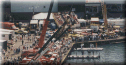
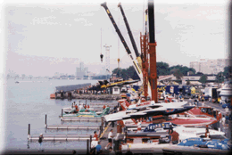

Pit Corner seating is one of our premiere passes, and consists of 2 similar seating areas. The larger Pit Corner area is shown in the first photo as the red & white 'riser' area in the distance, at high center of the photograph. This area gives you an elevated view of the pit action along with an excellent view of the race course.

![[Pit Corner Photo]](pcorner1.gif)
The smaller Pit Corner area is located just feet from the edge of the Detroit River and is favored by photographers. In the second photo, this area can be discerned by looking for the people seated in the bleachers. Starting in 1996, we've made this area more comfortable by replacing the bleachers with 100 theater style padded seats.
Priced at $150 each, these passes include a Sunday catered lunch and race program. If you prefer to arrange your own lunch, these seats are available for $125 each. These are not covered areas.
A free Gold Cup Pit Pass is included with every ticket.
For parking information, see the Dodge Pits Parking - Race Days info.

![[Pit Corner Photo]](pcorner4.gif)
The two photos above are from the large and small Pit Corner areas, respectively. Each area offers a fantastic view.
 Return to the Ticket Info page.
Return to the Ticket Info page.
All contents Copyright © 1997 Spirit of Detroit THUNDERFEST, except where noted.
Web page created by Brian Reed.
 Return to the Top THUNDERFEST page.
Return to the Top THUNDERFEST page.
All Rights Reserved.